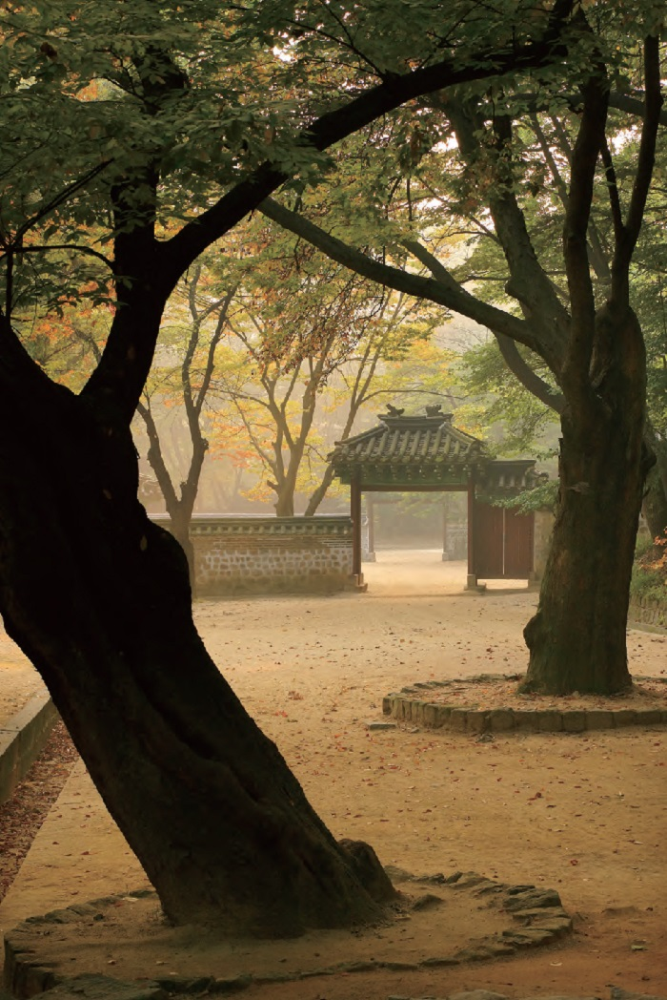
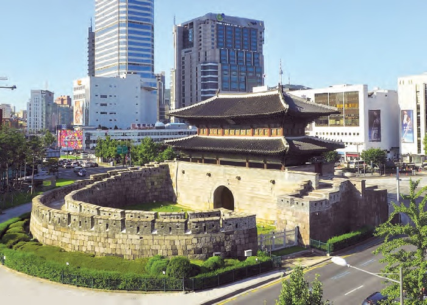

Seoul, the capital of the Republic of Korea, is itself an important part of Korea’s cultural heritage and the most popular attraction among overseas visitors to Korea. Although it is now one of the very largest modern metropolises in the world, its downtown area is enclosed by historic walls that were originally built over 600 years ago and contains a number of valuable historical heritage including Royal Palaces, fortress gates, and old residential districts.
Located at the foot of Bugaksan, the main mountain overlooking downtown Seoul, Gyeongbokgung was the principal Royal Palace for about 200 years from its construction in 1395, just three years after the foundation of the Joseon Dynasty (1392-1910), until it was burnt down just after the commencement of the Japanese invasion of Korea in 1592. Thereafter it remained in ruins for 275 years until 1867 when it was restored; but, less than fifty years later, it fell into the hands of Japanese colonialists who destroyed the front part of the palace to build the Japanese Government- General Building on the site. The latter building, a neo-classical structure, continued to be used to house government offices even after Korea was liberated in 1945 until it was demolished in 1996 as part of an effort to remove the remaining vestiges of the colonial period. Some of the ruins of the building were moved to the Independence Hall of Korea in Cheonan, Korea for public display.
Under a major renovation project to restore the palace starting in 1990, some of its buildings were restored and its main gate, Gwanghwamun, was moved to its original location. Today, the palace features some of the country’s most popular tourist attractions, including the majestic architectural pieces, Geunjeongjeon Hall and Gyeonghoeru Pavilion.
The rear garden of Changdeokgung Palace, one of the Royal Palaces of Joseon (1392-1910) still standing in Seoul, has been widely praised for the harmony between exquisite architectural structures and its natural surroundings, and is now one of the most popular tourist attractions in Seoul. The garden, known as the “secret garden” (biwon), the “forbidden” (geumwon) or “rear garden” (huwon), was a preferred venue for royal events such as banquets and picnics. It features a pond and several exquisite pavilions that were built around it over a long period of time. The garden was open to the general public until the mid-1970s, but this caused severe damage which led to its closure for several years to restore it to its original condition. Only a part of the garden was reopened to the public in May 2004, but at present visitors need to make reservations in order to visit.
To most Korean people today Deoksugung Palace is largely connected with the desperate struggle of the Joseon Dynasty to survive amid the incursions of the major imperial powers at the turn of the 19th century. It was in 1897 that King Gojong proclaimed the launch of the Korean Empire and designated Deoksugung as the imperial palace after leaving the Russian legation where he had taken refuge one year earlier in a desperate attempt to keep his government free from the interference of Imperial Japan.
With the proclamation of the Korean Empire the palace began to draw attention from foreign diplomats working in the legations of the United States, Russia, Great Britain and France located around it. Today, the clearest reminder of Deoksugung’s short-lived glory as the only imperial palace in Korean history is the changing of the palace guard ceremony, which takes place three times a day except for Mondays. The promenade along the southern wall of the palace has been particularly popular among young people seeking romantic ambiance.
Sungnyemun, or the ‘Gate of Exalted Ceremonies’, is the south gate of the old fortress wall that was built to protect the capital (todays’ downtown Seoul) of Joseon. It is the largest of the old fortress gates still standing in Korea today, and was designated as the National Treasure No. 1 in 1962. The pavilion-style wooden building forming the upper part of the gate was severely damaged by arson in February 2008, but was it was returned to its original form after a full-scale restoration project that took five years to complete.
The gate is often associated with the large complex of shopping facilities formed around it, including a traditional market which has steadily grown into a major tourist attraction. The area is always bustling with Korean and international shoppers seeking to purchase clothes, kitchen wares, domestic appliances and other commodities offered at reasonably low prices despite their good quality. Many of the shops doing business in the area run their own factories to maintain competitive pricing of the products they deal in.
The Namdaemun Market currently houses over 9,300 stores and attracts over 500,000 shoppers a day. It has formed a huge international trading network of Korean merchants scattered around the world, spending and earning a large amount of money through imports and exports.
